ASAPAI-Scaffolded Action Planner
An AI-native mobile app that helps people navigating major life transitions break down overwhelming tasks — one step at a time — acting as a coach, not an assistant.
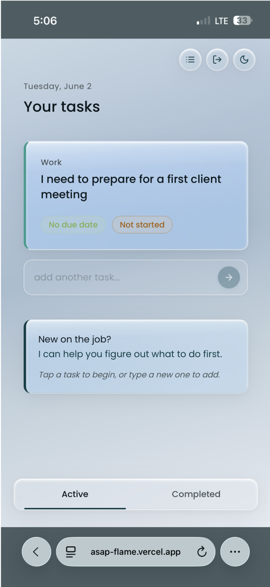
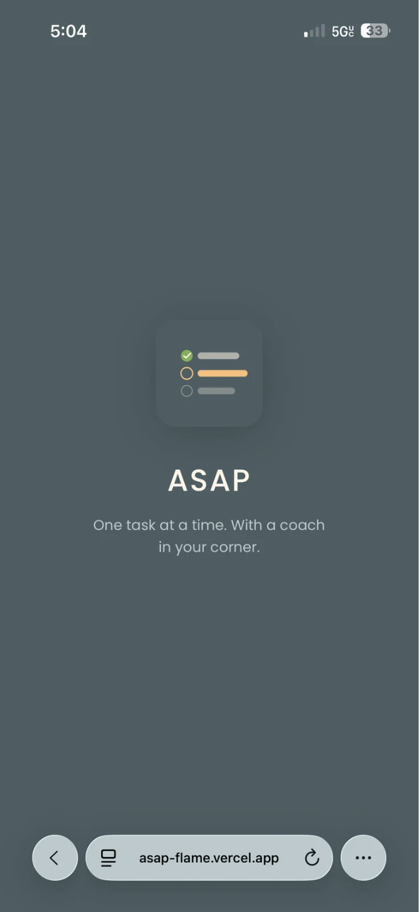
At a Glance
AI UX / Product Designer
Roles at AI-native companies where UX shapes how people interact with LLMs.Live Claude API integration
Designed an AI-powered academic planner that is deployed and running — not a concept.Research Lead & UX Design Director
Ran 6 interviews, designed 4 usability scenarios, directed IA and visual design for both app modes.Research reframed the problem
Students needed scaffolding, not another calendar — that insight drove every design decision.Live prototype, tested
Available at asap-flame.vercel.app, validated through 4 structured usability scenarios with real users.The paralysis
of starting over.
Whether it's starting college, switching careers, or launching a business — major transitions dump an entirely new set of tasks on people who don't yet know how to handle them. The result: overwhelm, avoidance, and stagnation.
"The problem isn't motivation — it's scaffolding. People know they have things to do. They don't know how to start, sequence, or break them down without help."
Research lead
& UX director.
I led user research end-to-end — literature review, design research interviews, usability testing — and translated findings into design direction. I directed the IA and screen flow, drove the color system for both modes, and kept every decision grounded in what participants actually said.
Six phases,
two full cycles.
A structured double-diamond process with two planned usability testing rounds. Round 2 is scheduled post-deployment to test with real usage context.
Initial lo-fi explorations. Three rounds of lo-fi built the foundation: where core actions live, how the AI coaching flow is triggered, and what information the user needs at each step.


Mid-fidelity added structure and hierarchy. This is where visual language was established — spacing, component placement, and the information architecture that carried through to the final hi-fi build.

The happy path maps the ideal flow from first open to a completed, AI-broken-down action plan — with the clarification and coaching steps visible.

Who we
designed for.
6 design research interviews with participants aged 18-34, each currently or recently navigating a major life transition. Four scenarios shaped the entire design: College Student, Tech Newbie, Career Swapper, Entrepreneur.
"Users didn't lack ambition — they lacked a clear first step. The blank screen moment was the biggest barrier to action."
Onboarding Flow — What users see first
The onboarding was designed to immediately signal the app's purpose: scaffolded guidance, not another to-do list. Users enter their transition type before the AI can personalise its coaching responses.
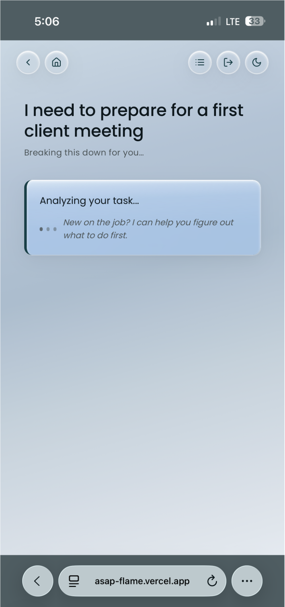
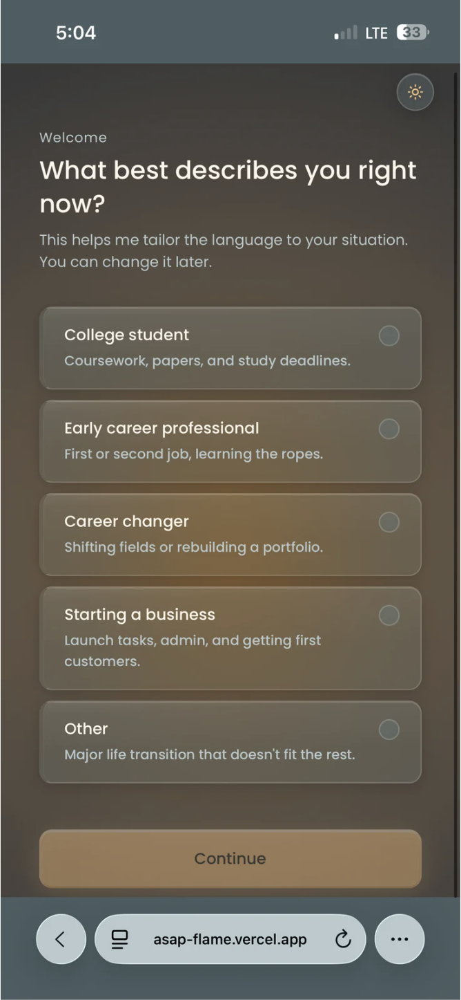
Where AI helped —
and where it didn't.
AI was embedded in how we designed and built it. An honest account of what worked and what fell short.
Task Entry — Where coaching begins
The task input screen is intentionally minimal. The AI doesn't act immediately — it first asks a clarifying question to understand the user's context before breaking down the task. This was a direct research finding: users felt heard before being guided.
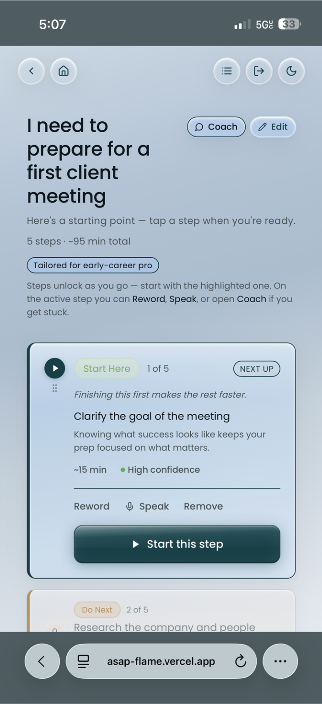
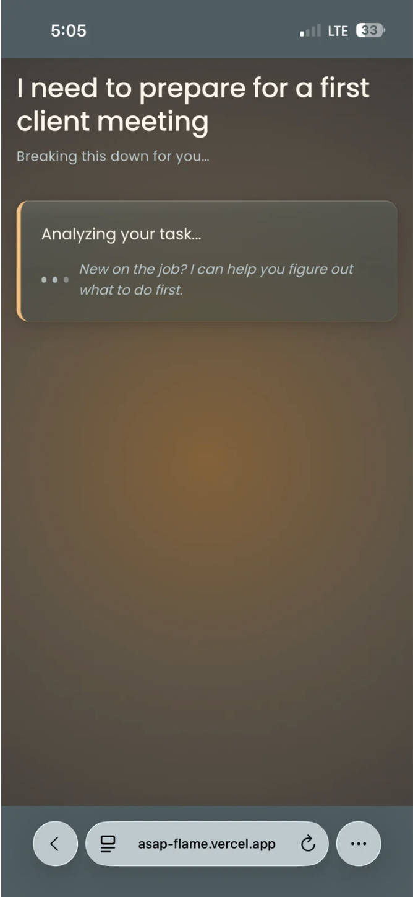
"AI accelerated ideation and build speed significantly. It struggled with context-depth — the same gap we identified in the product itself."
Calm
by design.
The core principle: the app must not add to the noise. Users are already overwhelmed. Every decision — color, type, layout — reduces cognitive load.
AI Breakdown — Screen 4
The first AI response screen shows the broken-down task with confidence labels. The calm design language prevents the screen from feeling overwhelming — intentional use of whitespace, muted secondary text, and a single primary action.
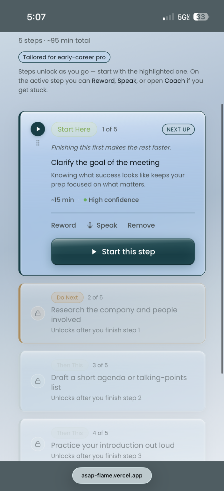
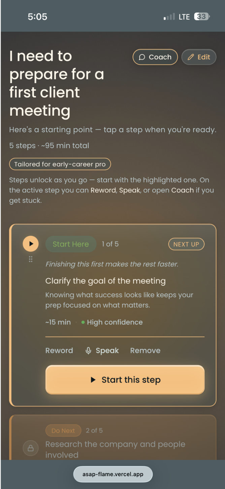
Subtask Detail — Screen 5
Subtask detail view. Each step is presented one at a time to prevent re-triggering the blank screen effect. The coaching nudge appears contextually — not on every screen.
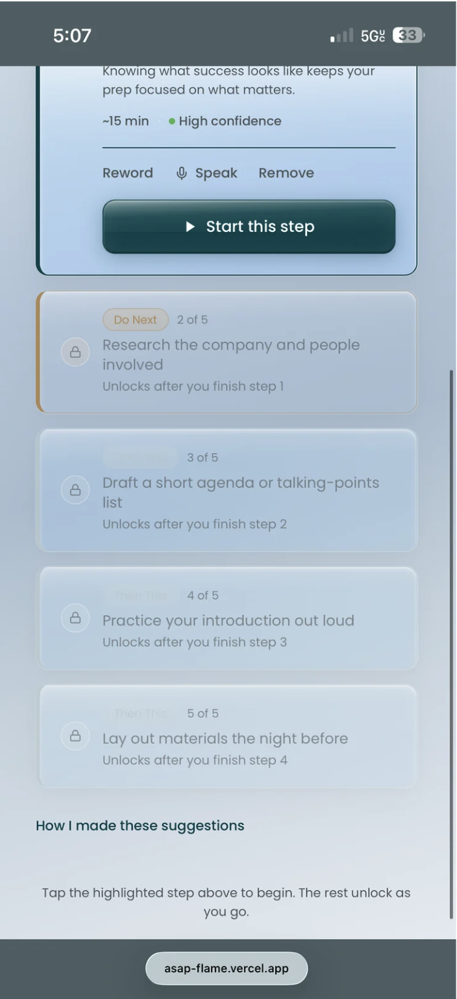
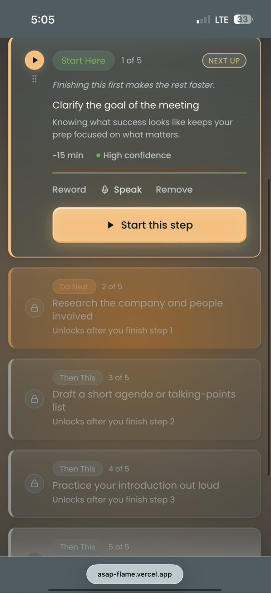
Progress View — Screen 6
Progress tracking. The design uses a minimal progress indicator — not a gamified streak — to avoid creating anxiety around incomplete tasks. The goal is momentum, not pressure.
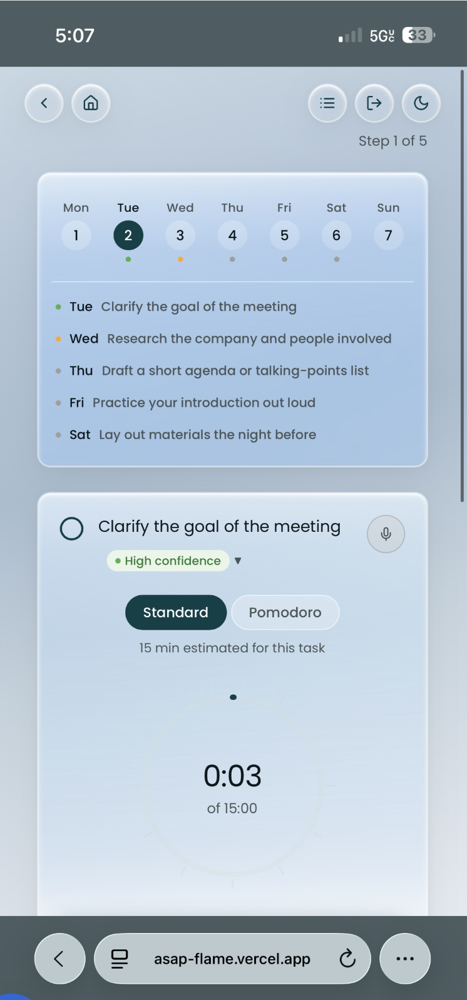
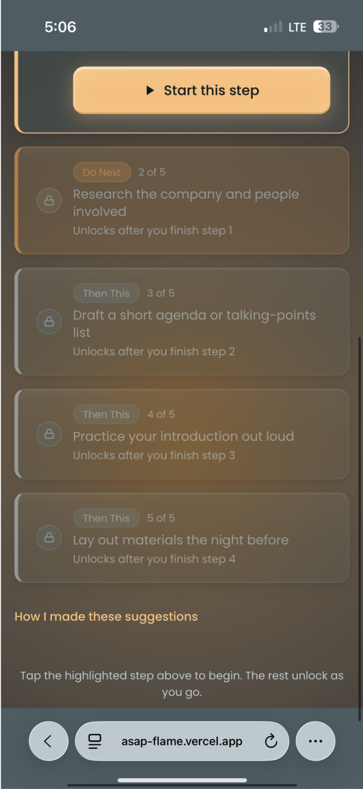
Deep Focus Mode — Screen 7
Deep Focus is a distraction-free view for users who want to work through a single task without switching between screens. Calendar access is intentionally housed here — a Round 1 finding: users wanted it earlier in the flow. Iteration 2 will surface it sooner.
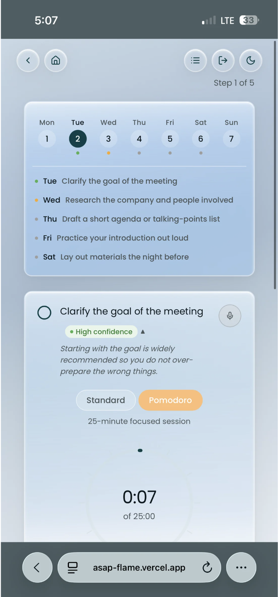
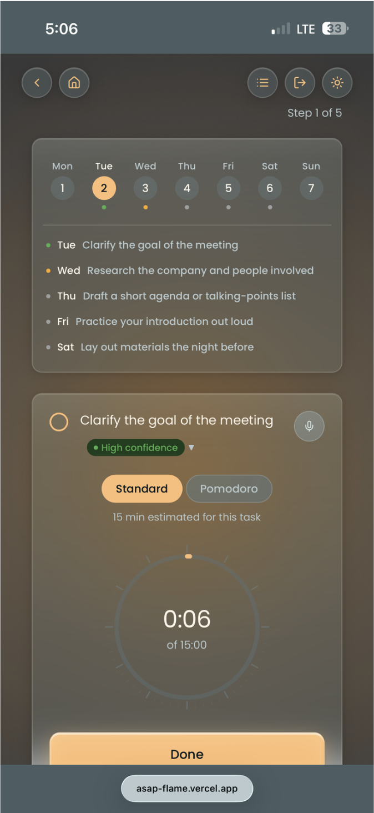
Profile + Settings — Screen 8
Profile and settings. Transition type is stored here — a key input for personalising the AI's coaching responses. In Iteration 2, this will inform contextual memory across sessions.
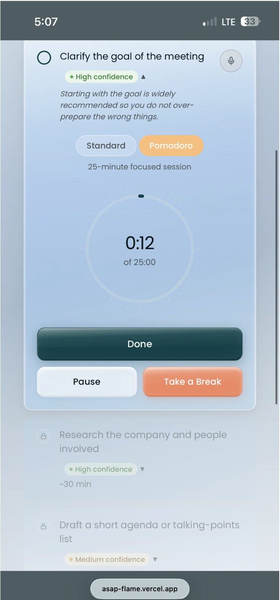
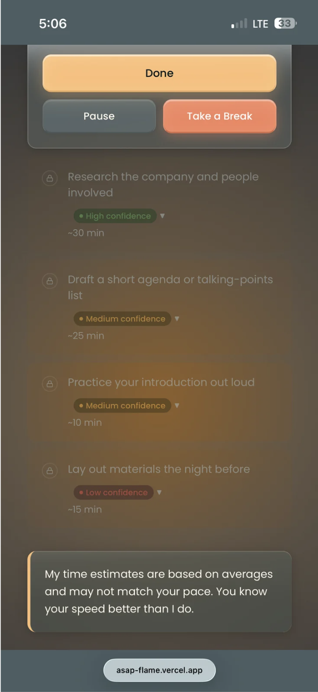
Remaining light-mode screens covering edge cases, empty states, and the onboarding completion flow.
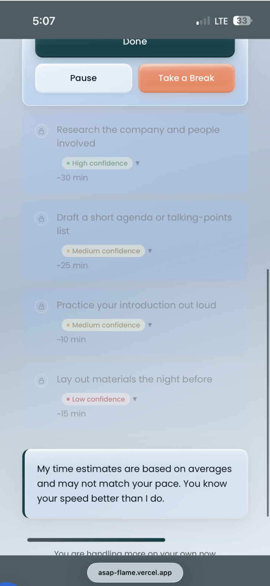
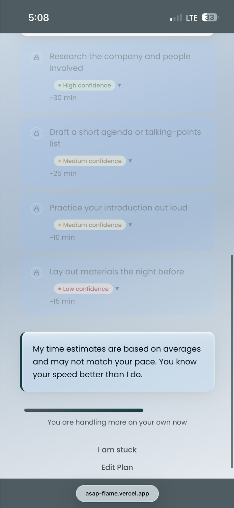
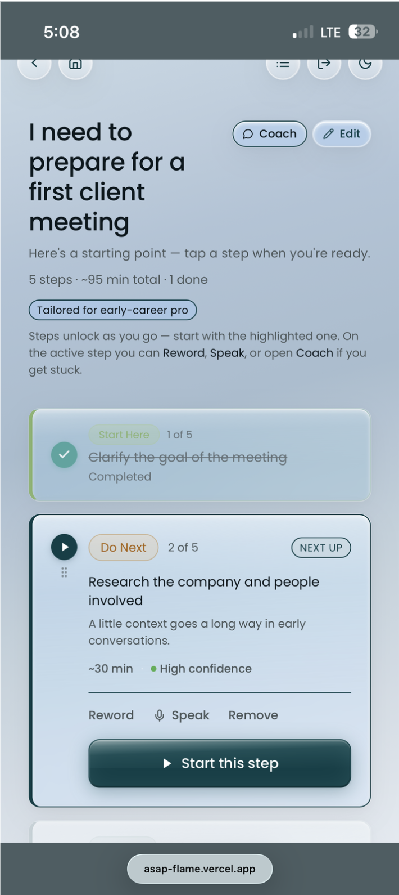
What Round 1
testing revealed.
Participants spanned all four transition types. A product with a strong emotional foundation but significant functional gaps limiting real-world adoption.
"ASAP's voice is its superpower. Its intelligence depth is its ceiling."
- Warm, honest tone — didn't feel generic or robotic
- Confidence labels felt refreshingly different from other AI tools
- One-step-at-a-time pattern helped users who freeze at blank screens
- Clarification flow caught vague inputs — called a "hidden gem" by one participant
- Welcome copy that acknowledged life transitions resonated emotionally
- Soft refusal and coach fallback responses felt supportive, not dismissive
- Subtasks too surface-level — all personas got roughly the same output
- 5 steps insufficient for multi-day or complex projects
- No due date functionality breaks the planning loop
- Clarification flow powerful but hidden — users didn't know it existed
- No onboarding tutorial before the first task
- Edit button ambiguous; no save progress indicator
- Calendar only accessible in Deep Focus — users wanted it earlier
Iteration 2
roadmap.
Deployed before Round 2 testing — intentionally. Real usage data will surface friction that controlled testing can't capture.
Building the coach, not the answer. A tool that does everything for you isn't scaffolding — it's dependency. The goal was always to make itself unnecessary. That's still the north star.